Gamedev JS 2024: The Power Of Two
April-May 2024
Links
Play The Power Of Two on Itch.
See the entry's ranking on Itch.
Source code on Github.
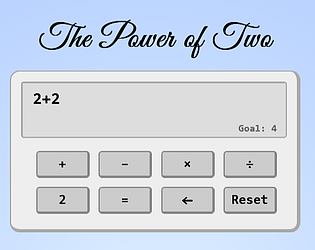
Making-of
Day 1: Brainstorming
The theme is POWER and the deadline is in 13 days only. I have to find an idea for a mini-game.
Here's the list I sent to my friends:
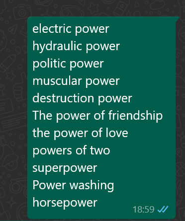
Power of love had the most success, but I couldn't find a fun idea...
Day 2: PoC
I finally decided to go with the idea "The power of two".
It could be a little maths puzzle game where only the number two is allowed.
I thought it was a good play on words with the "powers of two", which reign in computer science.
I had a vague memory of a paper game that existed when I was a kid, where we had to complete a list of 4 identical numbers with math operators to reach different results.
I found an example on Google called TWOS CHALLENGE:
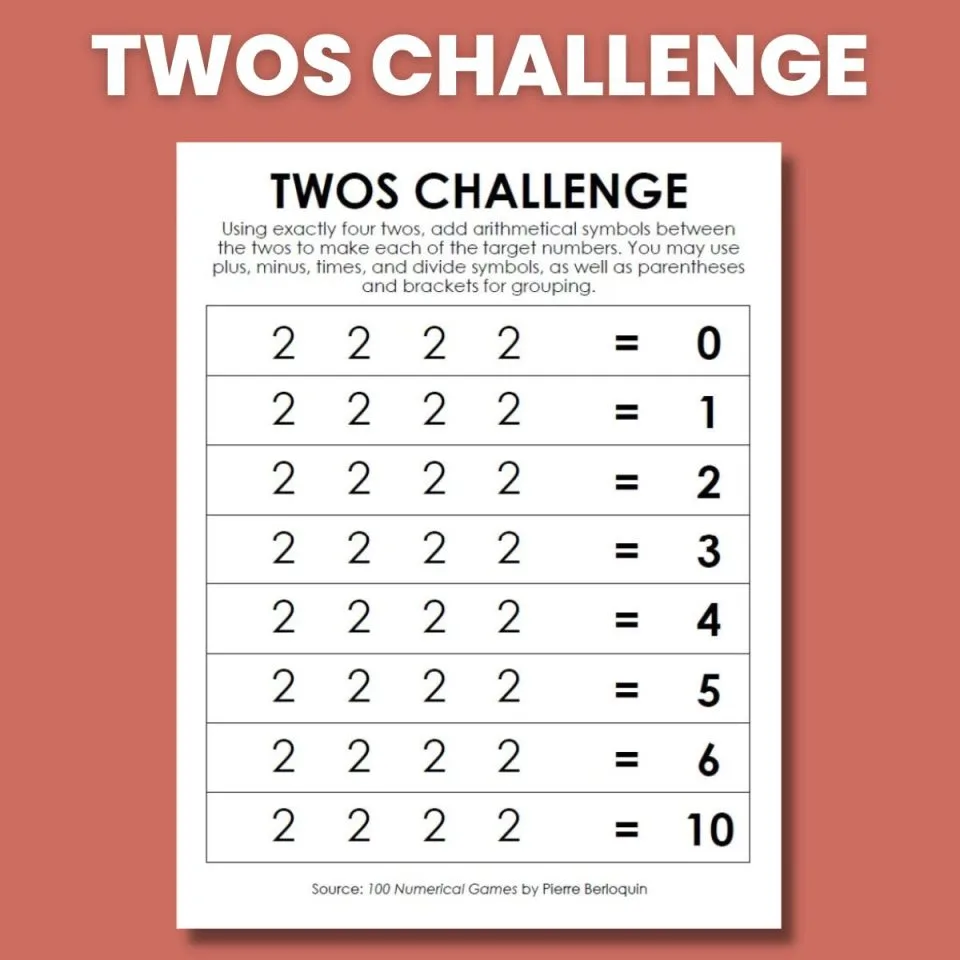
To ease the user experience, I decided to go with a calculator interface, and spent the second day PoC'ing it with HTML and CSS:
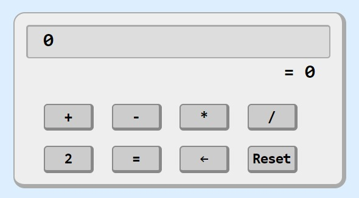
The calculator is also a good way to surprise the player with the ability to use concatenation (22, 222, 2222...).
I first imagined letting the player solve every number from 0 to 32 with four twos, but I tried it on paper and it was not only boring, but most of the time impossible.
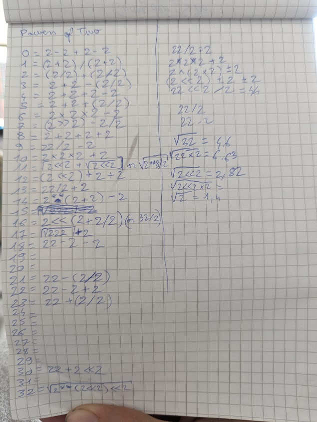
Many "solutions" require bit shift, floor and ceil operators to work, which I didn't really want to include in my game.
Though, I have a little tenderness for the solution I found for 17: ceil(sqrt(222))+2
... and the one for 32: sqrt(2**(2<<2)<<2).
Anyway, my game needs to be much simpler than that.
Day 3: skeumorphism
I showed the original design to my friends and included their remarks: the total should be displayed on screen and the buttons should be bigger. I also decided to use Unicode characters for +, −, × and ÷ and use smooth animations when buttons are pressed.
More importantly, I made all the calculator functional (all the buttons work, and most of the bugs, weird edge cases invalid equations are handled by a simple "eval" placed inside a big "try / catch", if you know what I mean).
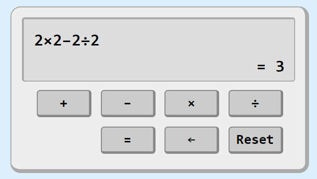
Day 4: let's go for real
The PoC is ready (and a bit messy), so I refactored everything properly, made the first two (tutotial) levels, implemented level transitions, limited the number of twos allowed in each level, and started working on the intro cutscene.
The in-game screen now shows the available twos and the goal.
My source code is already 7kb...
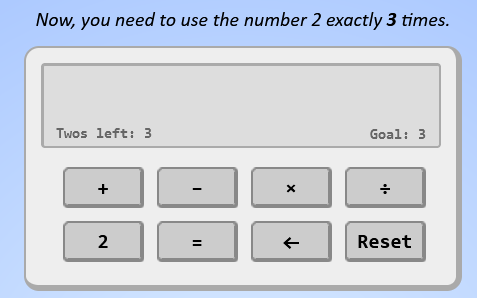
Days... 5 to 12
Unfortunately, I fell sick for a whole week, forcing me to drastically reduce the scope of my entry.
I didn't have the strength to work on my game except adding one or two levels per day (which is close to nothing, each level being stored as an array of two numbers in the game's code... but the important thing is that I could select the ones that I considered the most interesting to play).
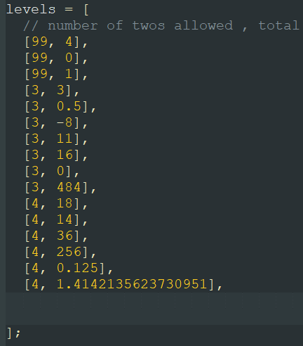
As you can see, few levels remain, and we are far from the original list that goes from 0 to 32, but it's for the better!
On day 12, I added a new line of buttons on the calculator, for power and parenthesis. (I really wanted to have powers, because of the theme, and because I found interesting that power 1/2 corresponds to a square root).
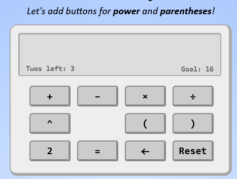
Day 13: polishing and... AI?
I spent the final hours I had before the deadline fixing the last bugs and finalizing my animations, transitions and hints...
For the game's ending, my friend Adrien and I had an idea: reference each other's entries in our own game.
His game is playable here: Powered by HI.
In his game, an AI creates a mini game where equations must be solved using the number three.
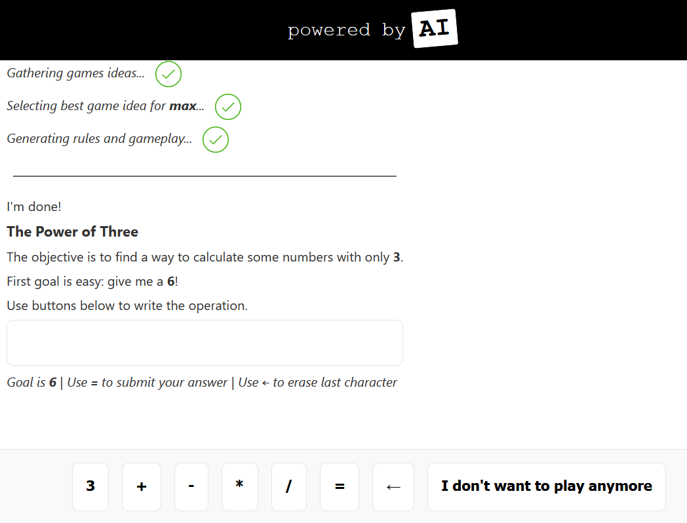
It finally points to my entry after a few turns. Nice!
On my side, I added an AI button on level 17 that mimicks requesting Adrien's AI to get a hint (the hint about power 1/2).
After level 17, I made the AI decide to hack my game and add 1000 levels, where the player has 8 twos at their disposal to compute every number from 1 to 1000.
Talk about artificial lifespan in video games! This one is literally artificial.
After the 10th digit, helper buttons appear to help input the values 1 to 10 in the equation.
For the music, I didn't have the time, so I used the sample music I had made for Alphabet-piano, in loop.
I released the game on itch the 13th day, competing in the Github, NPC (thanks to the AI) and js13kgames categories.
For the record, I asked a "real" AI to give me valid solutions for the numbers 0 to 16, by using exactly 4 twos. It was not a success (I wrote the solutions 0, 1 and 2 myself to give it an example... all the rest is wrong or empty).
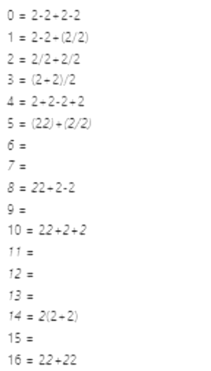
Indeed, my zipped entry is only 5kb, without even having to golf it. It does load a font from Google Font for the game's title, but it doesn't take more than 2kb thanks to font optimization with text parameter (only loading a subset of the font, to cover the letters I need in my game, and nothing more).
Due to the sick week, my work time on this game is ridiculously low: about 12 hours.
I spent the following 2 seeks testing every entry of the jam, and rating most of them before the vote deadline.
I listed my top 17 on X.
Comments received on my entry
hendrikras: Very original but educational too. Did you come up with al those problems yourself? (yep)
Stiggstogg: On my sheet where I did my brainstorming there is also somewhere written "Math" as an interpretation for "POWER". I sounded really cool, but I struggeled a lot to come up with a fun game mechanic. Looks like you made it! I really liked this entry: Simple but captivating and after a while you get to know a lot of tricks on how to combine the twos to get to certain numbers. I have not much feedback to improve this entry. Maybe the music, as it is a bit short, but I know that this is hard within the limitations of 13kb.Congratulations to this cool entry!
CGpepper: That is genius! Really fun game and a great use of the theme
xMD7x:This was an interesting use of the theme. Very cool.
Cagey Games: Really fun interpretation of the theme. Reminds me of being distracted in math class and pushing random button on the calculator for fun. Great concept for a puzzle. Good job!
Cinevva Game Engine: It's a simple on one side and challenging on another side math puzzle! Well implemented! You know it made it into another submission as a mini-game? (yep, it's Adrien's entry)
Paolo: That's a great concept and very well implemented!
spookyrobloxman999: good concept and i like the music!
MOHMOH: Such a clever concept, and so much fun to play!
kebobo: fun game its been a while since i used my brain gg
Raptorspank: Really simple puzzle but I was quite impressed by how many challenges you were able to make using such a simple set-up. Nicely done!
Josep Valls: Great game. I got impatient and the transitions take too long, but that is a sign I was hooked. Some button sounds would had been great as well.
Yhac10: This, is the greatest game that this jam- no, any jam has ever graced the witness of. The story of a simple number trying to make it in life, while a negative is always pushing him down, braking the number to division. I cried when the number finally was saved out of the situation by a positive, causing the number number to multiply in happiness. And the gameplay, simply beautiful. I give this experience a 2/2, truly one of the great video games, among the likes of Super Multiplyrio, and Subtractemon: addition and division. --- But on a serious note, interesting concept for a game. I am a bit disappointed with the lack of music, but that's more on me for expecting some in a calculator game. (there *is* music, but that's a fun comment)
jkimmyboi: Our group talked about this interpretation of the prompt but I'm glad to see someone actually turned it into an interesting puzzle game! Good job :)
ahmaddx900: great concept, never thought I'll enjoy math this way, loved it, but the 36 got me ×-(
carelesslabs: Clever idea, lots of fun!
unique chars: Hi! I got to the point where I had to find the number 36. Original topic! Judging by the description, there was something else interesting, but 36 beat me :). The music sounded nice, it was fun and easy to play, I had fun and congratulations!
Imaad Phoplunker: Great game! A simple yet fun puzzle game, with solid implementation. Nice work!
Brave Kings Studio: How could you make all these levels? Ahahah! It's simple but the take on the theme is very clever and, if you like puzzles and math conundrums it's great! Great job!
tictacs: Interesting puzzle game - would have loved being able to use the numpad! i find it fascinating because it is such a simple game, yet you just keep wanting to play more levels.
skycreator: Got stuck on 137 before going to bed
summitgame: Nice work. I completed the demo but there was some head scratching moments.
trich3ma: omg i really liked the game and music the AI(?) is implemented so nicely, if it is a real AI. I hope you win this challenge bc the game turned out to be soooo nice and simple, but most importantly entertaining and rewarding. Really enjoyed the notes teehee :)
WipeFire: I like this simple and nice game. You definitely better than me in math.
Results
My entry was ranked 36th overall and FIRST in the js13kgames category, out of 233 entries !
It was also ranked 3rd overall for its innovation and 9th for the theme.
No ranking for the Github and NPC challenges, unfortunately.
See you next time!